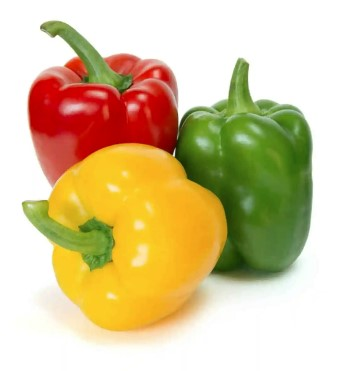

6 bell peppers of any color
4 tbls olive oil
8 ounces lean ground beef
Kosher salt and ground black pepper
1 finely diced onion
2 chopped garlic cloves
1 medium zucchini, finely diced
4 roma tomatoes diced
Red pepper flakes
1 cup cooked long-grain pepper jack cheese
1 1/2 cups grated pepper jack cheese
Preheat oven to 350 degrees F
Remove tips of the pepper and discard stems. Shop the tops finely and set them aside. Scoop out seeds and membrane as best as you can and place the peppers cut-side up on the baking dish
Place large skillet on medium high heat and add 2 tablespoons of olive oil. Add beef and season with salt and pepper. Cook and stir til 8 to 10 minutes unti brown. Remove access fat by placing beef in paper towel lined plate
Take out skillet and add the heated 2 tablespoons of olive oil. Add onions and chopped pepper and cook until soften. Next add the zucchini and garlic. Add tomatoes and 2 pinches of red pepper flakes. Cook until everything is heated, then stir in the beef and rice while adding 1 cup of cheese
Take the peppers and stuff with rice mixture. Then top each with the remaining 1/2 cup of cheeese. Cover the peppers with foil and bake for 30 minutes. After 30 mins, remove the foil and bake for another 15 mins until melted and lightly browned